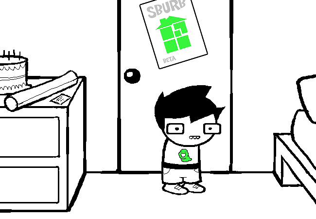

John Egbert
Estreia: Página 1
EctoBiologist
Pilha/Fila
Rose Lalond
Estreia: Página 214
TentacleTerapist
Usa Árvore Binária

Dave Strider
Estreia: Página 308
TurntechGodhead
Usa Tabela Hash

Jade Harley
Estreia: Página 760
GardenGnostic
Usa estrutura de Jogo da Memória